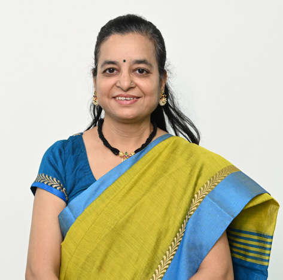

Prof. Anjali Milind Purohit
Associate Professor

Associate Professor
Prof. Anjali Purohit is an accomplished academic and researcher in the field of Electrical Engineering. She completed her graduation in Electrical Engineering from Pune University in 1992 and later received her M.E. (Power Systems) from the same university in 2000. Currently, she is pursuing her PhD in power system protection from Amaravati University. Anjali has over 20 years of teaching experience and two years of industry experience. She is an Associate Professor in Electronics and Telecommunication Engineering at MIT-WPU. Prof. Purohit is a member of IE (I) and Life Member of ISTE. She has organized numerous STTP and conferences for the benefit of faculty and students. Prof. Purohit has also undertaken significant administrative responsibilities throughout her career. Her research interests include power system protection, power electronics, and artificial intelligence, among others.
Power System Protection, Artificial Intelligence, Power Electronics
Profiles